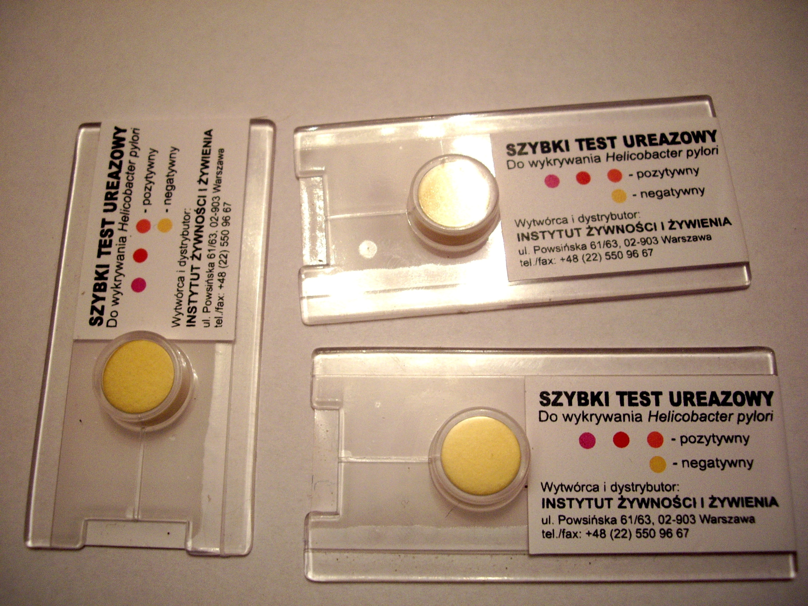
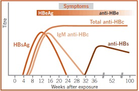
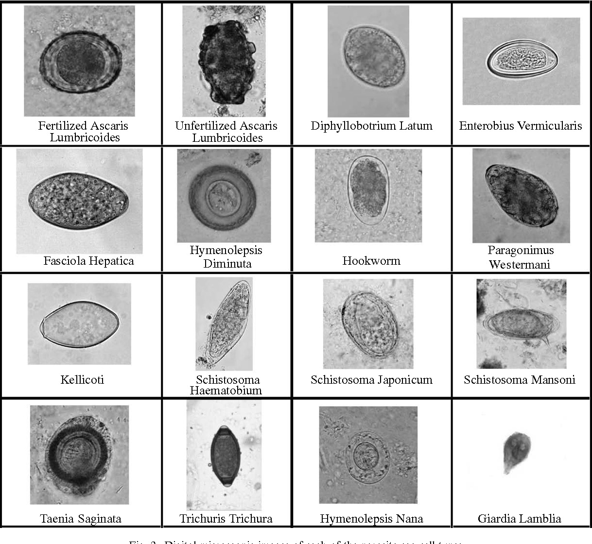

Infecții Digestive
De la Helicobacter pylori la hepatitele virale și gastroenteritele acute
Infecțiile tractului digestiv sunt printre cele mai frecvente patologii infecțioase la nivel global. Organizația Mondială a Sănătății estimează că bolile diareice acute sunt responsabile de peste 1,5 milioane de decese anual, majoritatea la copiii sub 5 ani din țările în curs de dezvoltare. În România, deși mortalitatea este semnificativ mai mică, bolile diareice și hepatitele virale rămân probleme importante de sănătate publică. Capacitatea de a diferenția rapid mecanismul patogenic (secretor vs. inflamator vs. invaziv) ghidează întregul management — de la decizia de a trata simptomatic la indicația de antibioterapie și momentul internării. Fiecare pacient cu diaree acută necesită evaluare a stării de hidratare ÎNAINTE de orice investigație etiologică. Rehidratarea este piatra de temelie a tratamentului, indiferent de etiologie.
Infecția cu Helicobacter pylori
Microbiologia și factorii de virulență
Helicobacter pylori este un bacil Gram-negativ, spiralat, microaerofil, care colonizează exclusiv mucoasa gastrică umană. Supraviețuirea în mediul acid gastric este posibilă datorită producției masive de urează — o enzimă care hidrolizează ureea în amoniac și dioxid de carbon, creând un micromediu alcalin protector în jurul bacteriei. Transmiterea se face predominant pe cale fecal-orală și oral-orală, în special în copilărie, în medii cu condiții socio-economice precare.
Din punct de vedere al virulenței, tulpinile de H. pylori se clasifică în două tipuri majore. Tulpinile de tip I (CagA-pozitive, VacA-pozitive) sunt cele mai agresive: proteina CagA (Cytotoxin-Associated Gene A) este injectată direct în celulele epiteliale gastrice printr-un sistem de secreție de tip IV, declanșând semnalizare celulară aberantă, inflamație cronică și, pe termen lung, risc crescut de metaplazie intestinală și adenocarcinom gastric. Toxina VacA (Vacuolating Cytotoxin A) induce formarea de vacuole în celulele epiteliale și inhibă răspunsul imun local. Tulpinile de tip II (CagA-negative) sunt mai puțin virulente și mai frecvent asociate cu gastrită cronică superficială fără progresie malignă.
Diagnosticul infecției cu H. pylori
Metodele diagnostice se împart în două categorii: invazive (necesită endoscopie) și non-invazive.
Metodele invazive necesită biopsie gastrică obținută endoscopic: - Testul rapid cu urează (CLO test) — biopsia este plasată într-un mediu cu uree și indicator de pH. Dacă H. pylori este prezent, ureaza bacteriană descompune ureea, eliberând amoniac care alcalinizează mediul și schimbă culoarea indicatorului (de la galben la roz/roșu). Rezultat disponibil în 1-24 ore. Sensibilitate ~90%, specificitate ~95%. - Examenul histopatologic — colorații speciale (Giemsa, Warthin-Starry) evidențiază bacteriile spiralate la suprafața mucoasei. Permite și evaluarea gradului de gastrită, prezența metaplaziei intestinale și a atrofiei. - Cultura bacteriană — cea mai specifică metodă (100%), dar și cea mai dificilă tehnic (necesită medii speciale, atmosferă microaerofilă). Utilă mai ales pentru antibiogramă în cazul eșecului terapeutic.
Metodele non-invazive nu necesită endoscopie: - Testul respirator cu uree marcată C13 — pacientul ingeră uree marcată cu carbon-13; dacă H. pylori este prezent, ureaza bacteriană descompune ureea, eliberând CO₂ marcat care este detectat în aerul expirat. Este considerat gold standard-ul non-invaziv pentru diagnostic și pentru controlul eradicării (se efectuează la 4-6 săptămâni post-tratament). Sensibilitate și specificitate >95%. - Antigenul fecal — detectează antigene ale H. pylori în scaun prin metode imunoenzimatice. Alternativă la testul respirator, utilă mai ales la copii. - Serologia (IgG anti-H. pylori) — detectează anticorpi circulanți. Limitare importantă: NU diferențiază infecția activă de cea vindecată (anticorpii persistă luni-ani după eradicare). NU este utilă pentru controlul eradicării.

Kituri de test rapid cu urează (CLO test) pentru detectarea H. pylori. Casetele din plastic conțin godeuri circulare galbene cu substrat de uree și indicator de pH. Biopsia gastrică este plasată în godeu — dacă H. pylori este prezent, ureaza bacteriană descompune ureea, alcalinizând mediul și schimbând culoarea indicatorului de la galben la roz. Virarea culorii confirmă prezența infecției." data-sursa="https://en.wikipedia.org/wiki/Rapid_urease_test">Kituri de test rapid cu urează (CLO test) pentru detectarea H. pylori. Casetele din plastic conțin godeuri circulare galbene cu substrat de uree și indicator de pH. Biopsia gastrică este plasată în godeu — dacă H. pylori este prezent, ureaza bacteriană descompune ureea, alcalinizând mediul și...
Kituri de test rapid cu urează (CLO test) pentru detectarea H. pylori. Casetele din plastic conțin godeuri circulare galbene cu substrat de uree și indicator de pH. Biopsia gastrică este plasată în godeu — dacă H. pylori este prezent, ureaza bacteriană descompune ureea, alcalinizând mediul și schimbând culoarea indicatorului de la galben la roz. Virarea culorii confirmă prezența infecției.
Tratamentul infecției cu H. pylori
Tratamentul standard de primă linie este tripla terapie clasică, administrată pe durata de 14 zile (fostele scheme de 7 zile au fost abandonate din cauza ratei crescute de eșec):
- Amoxicilină 1 g x 2/zi + Claritromicină 500 mg x 2/zi + Inhibitor de pompă de protoni (IPP) în doză standard x 2/zi
În cazul alergiei la penicilină, amoxicilina se înlocuiește cu metronidazol 500 mg x 2/zi.
Terapia cvadruplă cu bismut este alternativa de primă linie în zonele cu rezistență crescută la claritromicină (>15%) sau ca tratament de linia a doua după eșecul triplei terapii: - IPP x 2/zi + Bismut subsalicilat 524 mg x 4/zi + Metronidazol 250 mg x 4/zi + Tetraciclină 500 mg x 4/zi — 14 zile
Controlul eradicării este obligatoriu și se efectuează la minimum 4 săptămâni după terminarea tratamentului (și la minimum 2 săptămâni după oprirea IPP-ului) prin testul respirator C13 sau antigenul fecal. Serologia NU este utilă pentru controlul eradicării.
Principalele cauze de eșec terapeutic sunt: (1) rezistența la claritromicină — depășește 20% în multe țări europene, inclusiv România; (2) complianța scăzută a pacientului — schema cu 3 medicamente de 2 ori pe zi timp de 14 zile este dificil de respectat; (3) administrarea IPP-ului în doze insuficiente — IPP-ul trebuie administrat cu 30 minute înainte de masă pentru eficacitate maximă. Rata globală de eradicare cu tripla terapie este de ~70-80% (față de >90% în trecut), motiv pentru care ghidurile recente recomandă terapia cvadruplă cu bismut ca alternativă de primă linie în zonele cu rezistență înaltă.
C) INCORECT — CLO testul necesită endoscopie, care nu se repetă de rutină doar pentru controlul eradicării (este invazivă și costisitoare). Se rezervă pentru cazurile cu indicație endoscopică independentă (ex: ulcer gastric — necesită rebiopsierea pentru excluderea malignității).
D) INCORECT — Antigenul fecal este o alternativă validă pentru controlul eradicării, DAR trebuie efectuat la minimum 4 săptămâni (nu 2) după terminarea tratamentului. La 2 săptămâni riscul de rezultat fals-negativ este crescut.
E) INCORECT — Cultura din biopsie este cea mai specifică metodă, dar este invazivă, costisitoare și dificilă tehnic. Este rezervată cazurilor de eșec terapeutic repetat, pentru antibiogramă.
Hepatitele virale acute
Hepatita A
Virusul hepatitei A (HAV) aparține familiei Picornaviridae, este un virus ARN fără anvelopă, extrem de rezistent în mediul extern. Transmiterea se face exclusiv pe cale fecal-orală — prin apă și alimente contaminate, sau prin contact direct cu persoane infectate. Perioada de incubație este de aproximativ 28 de zile (interval 15-50 zile), iar contagiozitatea maximă este în cele 2 săptămâni anterioare debutului icterului, când virusul este excretat masiv în scaun.
Tabloul clinic variază în funcție de vârstă: la copiii sub 6 ani, infecția este frecvent asimptomatică sau anicterică (>70% din cazuri); la adulți, peste 70% dezvoltă icter clinic, astenie marcată, grețuri, dureri abdominale și urini hipercrome. Evoluția este aproape întotdeauna autolimitată — nu cronicizează niciodată. Hepatita fulminantă apare în mai puțin de 0,01% din cazuri, dar riscul crește la pacienții cu hepatopatie cronică preexistentă sau vârstă avansată.
Diagnosticul se bazează pe prezența IgM anti-HAV — marker de infecție acută, prezent de la debutul simptomelor și persistă 3-6 luni. IgG anti-HAV indică imunitate (post-infecție sau post-vaccinare) și persistă toată viața.
Tratamentul este exclusiv suportiv: hidratare, repaus, evitarea hepatotoxicelor (alcool, paracetamol). Nu există tratament antiviral specific.
Profilaxia se realizează prin vaccinare (vaccin inactivat, 2 doze la 0 și 6-12 luni) — eficacitate >95%. Vaccinarea post-expunere este eficientă dacă se administrează în primele 2 săptămâni de la contact. Notificarea epidemiologică este obligatorie.
Hepatita B
Virusul hepatitei B (HBV) aparține familiei Hepadnaviridae, este un virus ADN cu anvelopă, cu un mecanism de replicare unic printr-un intermediar ARN (revers-transcriptază). Transmiterea se face pe cale parenterală, sexuală și verticală (perinatală). HBV este de 50-100 de ori mai infecțios decât HIV.
Riscul de cronicizare depinde critic de vârsta la momentul infecției: 90% la nou-născuții infectați perinatal, 30-50% la copiii 1-5 ani, și sub 5% la adulții imuncompetenți. Această inversare dramatică reflectă imaturitatea răspunsului imun celular la nou-născut.
#### Markerii serologici ai hepatitei B
Interpretarea serologiei HBV este esențială și se bazează pe câțiva markeri-cheie:
- HBsAg (antigenul de suprafață) — prezent în orice infecție activă (acută sau cronică). Persistența >6 luni definește infecția cronică.
- Anti-HBs (anticorpi anti-suprafață) — marker de imunitate protectoare (post-infecție vindecată sau post-vaccinare). Titru protector: >10 mUI/mL.
- IgM anti-HBc (anticorpi IgM anti-core) — marker-cheie al infecției acute. Prezent doar în infecția recentă (titru înalt) sau reactivare.
- IgG anti-HBc (anticorpi IgG anti-core) — marker de contact cu virusul (persistă toată viața). Prezent atât în infecția vindecată cât și în cea cronică.
- HBeAg (antigenul e) — marker de replicare activă și contagiozitate crescută.
- Anti-HBe — apare la seroconversia e, indică scăderea replicării virale.

Graficul evoluției markerilor serologici ai hepatitei B în timp (săptămâni după expunere). Se observă apariția secvențială a markerilor: HBsAg apare primul (înainte de simptome), urmat de HBeAg (marker de replicare activă). IgM anti-HBc apare odată cu debutul clinic și este markerul-cheie al infecției acute. Anti-HBe apare la seroconversie, iar anti-HBs apare tardiv, marcând vindecarea și imunitatea protectoare. Fereastra serologică (HBsAg negativ, anti-HBs încă negativ) este acoperită de prezența IgG anti-HBc." data-sursa="https://cdn.who.int/media/docs/default-source/searo/hiv-hepatitis/training-modules/08-hbv-serological-markers.pdf">Graficul evoluției markerilor serologici ai hepatitei B în timp (săptămâni după expunere). Se observă apariția secvențială a markerilor: HBsAg apare primul (înainte de simptome), urmat de HBeAg (marker de replicare activă). IgM anti-HBc apare odată cu debutul clinic și este markerul-cheie al infecției acute....
Graficul evoluției markerilor serologici ai hepatitei B în timp (săptămâni după expunere). Se observă apariția secvențială a markerilor: HBsAg apare primul (înainte de simptome), urmat de HBeAg (marker de replicare activă). IgM anti-HBc apare odată cu debutul clinic și este markerul-cheie al infecției acute. Anti-HBe apare la seroconversie, iar anti-HBs apare tardiv, marcând vindecarea și imunitatea protectoare. Fereastra serologică (HBsAg negativ, anti-HBs încă negativ) este acoperită de prezența IgG anti-HBc.
- 1. Infecție acută: HBsAg+, IgM anti-HBc+ (titru înalt), anti-HBs−
- 2. Infecție cronică: HBsAg+ >6 luni, IgM anti-HBc− (sau titru scăzut), anti-HBs−
- 3. Imunitate post-infecție: HBsAg−, anti-HBs+, IgG anti-HBc+
- 4. Imunitate post-vaccinare: HBsAg−, anti-HBs+ (>10 mUI/mL), anti-HBc− (nu a existat contact cu virusul)
Tratamentul hepatitei B
Hepatita B acută la adulți: 95% se vindecă spontan — tratamentul este suportiv. Antiviralele (entecavir sau tenofovir) sunt indicate DOAR în hepatita severă (INR >1.5, encefalopatie) sau prelungită.
Hepatita B cronică necesită evaluare complexă (ADN-HBV cantitativ, elastografie hepatică, biopsie). Indicațiile de tratament includ: ADN-HBV >2000 UI/mL cu ALT crescut și/sau fibroză semnificativă. Tratamentul de elecție: entecavir 0.5 mg/zi sau tenofovir disoproxil 245 mg/zi (sau tenofovir alafenamidă 25 mg/zi) — pe termen nelimitat.
Vaccinarea este cea mai eficientă măsură de prevenție: schema 0-1-6 luni, 3 doze intramusculare. Rata de seroconversie >95% la adulții imunocompetenți. Vaccinarea este inclusă în programul național de imunizare în România.
Există o perioadă în evoluția hepatitei B acute în care HBsAg a fost deja cleared (a dispărut din sânge), dar anti-HBs nu a apărut încă. Aceasta se numește „fereastra serologică" și poate dura câteva săptămâni. În această perioadă, singurul marker care confirmă diagnosticul este IgM anti-HBc (care rămâne pozitiv). Necunoașterea acestui fenomen poate duce la rezultate fals-negative dacă se testează DOAR HBsAg — motiv pentru care panelul serologic complet (HBsAg + IgM anti-HBc + anti-HBs) este obligatoriu în evaluarea hepatitei acute.
B) INCORECT — Deși anti-HCV poate fi negativ în primele 6-8 săptămâni (fereastră serologică), prezența IgM anti-HBc pozitiv oferă deja diagnosticul. Hepatita C ar necesita confirmare cu HCV-ARN (PCR).
C) INCORECT — Hepatita E este frecventă în Egipt (genotipul 1), dar IgM anti-HBc pozitiv confirmă deja infecția cu HBV. Hepatita E rămâne un diferențial în cazul serologiilor complet negative.
E) INCORECT — Hepatita autoimună nu produce de obicei transaminaze >2000 U/L (valorile sunt tipic moderate, 300-500 U/L). IgM anti-HBc pozitiv indică etiologia virală.
Algoritm Diagnostic — Hepatita Acută
Algoritmul de mai jos prezintă conduita diagnostică standard în fața unui pacient cu tablou clinic și biochimic de hepatită acută (creșterea transaminazelor >10x VN, icter, astenie). Evaluarea serologică inițială permite diferențierea rapidă a etiologiei virale.
Evaluare etiologică a hepatitei acute
Bazat pe ghidurile EASL, APASL și Am Fam Physician (PMID 30811163, 33967551)
Sindromul diareic infecțios — Mecanisme patogenice
Clasificarea patogenică a diareei infecțioase
Diareea infecțioasă poate fi clasificată în trei mecanisme patogenice fundamentale, fiecare cu implicații diagnostice și terapeutice distincte. Această clasificare nu este doar un exercițiu academic — ea ghidează direct deciziile clinice: necesitatea coproculturilor, indicația de antibioterapie și intensitatea monitorizării.
Mecanismul secretor (toxinogen) — prototipul este holera. Toxina bacteriană acționează asupra enterocitelor fără a le distruge, stimulând secreția activă de apă și electroliți în lumenul intestinal. Toxina colerică, de exemplu, activează permanent adenilat-ciclaza prin ADP-ribozilarea subunității Gs, ducând la creșterea AMPc intracelular și deschiderea canalelor de clor. Rezultatul este o diaree apoasă masivă (scaune „apă de orez"), fără sânge, fără mucus, fără leucocite fecale, fără febră. Deshidratarea poate fi severă și rapid letală dacă nu se intervine cu rehidratare agresivă. Alte exemple: E. coli enterotoxigenă (ETEC — „diareea călătorului"), Vibrio cholerae, Clostridium perfringens, Staphylococcus aureus.
Mecanismul inflamator (invaziv local) — prototipul este dizenteria shigellozică. Bacteria invadează mucoasa intestinală (de obicei colonică), producând distrucție tisulară cu răspuns inflamator intens. Scaunele sunt diareice cu sânge, mucus și puroi (dizenterie), leucocitele fecale sunt prezente, pacientul are febră și tenesme rectale. Examenul scaunului arată „spută rectală" — mucus sanguinolent cu leucocite. Alte exemple: Salmonella non-tifoidică, Campylobacter, E. coli enteroinvazivă (EIEC), Entamoeba histolytica.
Mecanismul invaziv (sistemic) — prototipul este febra tifoidă (Salmonella typhi). Bacteria nu doar invadează mucoasa, ci traversează bariera intestinală și diseminează hematogen, producând bacteriemie și afectare sistemică. Tabloul clinic este dominat de febră înaltă, nu de diaree (care poate fi chiar absentă sau moderată). Alte exemple: Salmonella paratyphi, Listeria monocytogenes, Yersinia enterocolitica (forme septicemice).
Secretorie (toxinogenă)
- Toxina acționează pe enterocite fără a le distruge
- Scaune apoase, voluminoase, fără sânge
- Leucocite fecale absente
- Febră de obicei absentă
- Localizare: intestin subțire predominant
- Deshidratare severă, rapidă (risc vital)
- Tenesme rectale absente
- Prototip: Vibrio cholerae
- Tratament: rehidratare (piatra de temelie)
- Coprocultură de obicei nu este necesară
Inflamatorie (invazivă)
- Bacteria invadează și distruge mucoasa
- Scaune cu sânge, mucus, puroi (dizenterie)
- Leucocite fecale prezente (>5/câmp)
- Febră prezentă, frecvent >38.5°C
- Localizare: colon predominant
- Deshidratare moderată
- Tenesme rectale prezente
- Prototip: Shigella dysenteriae
- Tratament: rehidratare + antibioterapie (selectiv)
- Coprocultură indicată (ghidează antibioterapia)
Indiferent de mecanismul patogenic, REHIDRATAREA este piatra de temelie a tratamentului diareei acute. Soluția de rehidratare orală (SRO) OMS conține: 2.6 g NaCl + 2.9 g citrat trisodic + 1.5 g KCl + 13.5 g glucoză per litru de apă. Glucoza este esențială — cotransportul Na⁺-glucoză (SGLT1) rămâne funcțional chiar și în prezența toxinei colerice, permițând absorbția de apă. Acest mecanism fiziopatologic simplu a salvat milioane de vieți și a fost numit de revista Lancet „cea mai importantă descoperire medicală a secolului XX".
Loperamidul (Imodium) și alte antidiareice de motilitate sunt CONTRAINDICATE în diareea inflamatorie (dizenterie) — reducerea motilității intestinale prelungește contactul toxinelor și bacteriilor invazive cu mucoasa, crescând riscul de megacolon toxic și perforație. Regula practică: dacă scaunele conțin sânge sau pacientul are febră înaltă, NU administra antidiareice de motilitate. Rehidratarea rămâne singura intervenție universal sigură.
Toxiinfecția alimentară
Principalii agenți etiologici
Toxiinfecțiile alimentare (TIA) sunt printre cele mai frecvente boli infecțioase la nivel global. Diagnosticul etiologic se bazează pe triada: alimentul suspect + intervalul de incubație + tabloul clinic dominant. Această corelație permite orientarea diagnostică chiar înainte de confirmarea microbiologică.
Agenții principali ai toxiinfecțiilor alimentare
| Agent etiologic | Aliment tipic | Incubație | Tablou clinic | Observații |
|---|---|---|---|---|
| S. aureus | Produse lactate, creme, salate cu maioneză | 1-6 ore | Vărsături predominante, diaree moderată, afebril | Toxină preformată (termorezistentă) — alimentul poate fi reîncălzit fără efect |
| B. cereus (emetică) | Orez reîncălzit, paste | 1-6 ore | Vărsături predominante, similare cu S. aureus | Toxina cereulide — termorezistentă, nu se distruge la reîncălzire |
| B. cereus (diareică) | Carne, legume, sosuri | 8-16 ore | Diaree apoasă, crampe abdominale | Toxină diferită de forma emetică — termolabilă |
| C. perfringens | Carne reîncălzită, tocături | 8-16 ore | Diaree apoasă, crampe, fără febră | Toxina se produce în intestin (nu e preformată). Formă ușoară, autolimitată 24h |
| Salmonella spp. | Ouă, pui, produse lactate nepasteurizate | 12-48 ore | Diaree (verde-gălbuie), febră, crampe | Autolimitată 3-7 zile. Antibioticele NU la imuncompetenți |
| E. coli O157:H7 | Carne insuficient gătită, lapte nepasteurizat | 1-8 zile | Diaree sanguinolentă, crampe severe, fără febră | RISC DE SHU (sindrom hemolitic-uremic) — NU antibiotice (cresc riscul)! |
| Norovirus | Fructe de mare (scoici), salate | 24-48 ore | Vărsături + diaree, foarte contagios | Cel mai frecvent agent de gastroenterită acută la adulți |
| Campylobacter | Pui insuficient gătit, lapte nepasteurizat | 2-5 zile | Diaree (poate fi sanguinolentă), febră, crampe | Risc de sindrom Guillain-Barré post-infecție (1/1000 cazuri) |
B) INCORECT — B. cereus forma diareică are incubație de 8-16 ore și predomină DIAREEA (nu vărsăturile). Forma emetică (cu vărsături) este asociată cu orezul reîncălzit, nu cu salata cu maioneză.
C) INCORECT — C. perfringens are incubație de 8-16 ore (nu 2 ore) și este asociat cu carnea reîncălzită. Tabloul este predominant diareic, nu cu vărsături.
E) INCORECT — Salmonella are incubație de 12-48 ore, chiar și la inocul mare. Ar produce febră și diaree, nu vărsături fără febră la 2 ore.
Dizenteria bacteriană — Shigella și Salmonella
Shigelloza
Shigella este un bacil Gram-negativ, nemobil, din familia Enterobacteriaceae, cu 4 serogrupe principale: - Serogrupa A (S. dysenteriae) — cea mai virulentă, produce toxina Shiga (Stx). Responsabilă de epidemii severe în țările în curs de dezvoltare, cu risc de SHU. - Serogrupa B (S. flexneri) — cea mai frecventă în țările în curs de dezvoltare. - Serogrupa C (S. boydii) — rară, localizată mai ales în India. - Serogrupa D (S. sonnei) — cea mai frecventă în țările industrializate, producând forme mai ușoare.
Caracteristica epidemiologică esențială este doza infecțioasă extrem de mică: 50-100 CFU sunt suficiente pentru a produce boala (față de 10⁵-10⁸ CFU pentru Salmonella). Aceasta explică transmiterea eficientă persoană la persoană, prin contact direct, și epidemiile în colectivități (grădinițe, cămine, instituții de îngrijire).
Tabloul clinic clasic al dizenteriei shigellozice include: diaree apoasă inițială (primele 24-48 ore), urmată de scaune frecvente (10-30/zi) cu sânge, mucus și puroi, tenesme rectale dureroase, febră înaltă (39-40°C) și crampe abdominale predominant în fosa iliacă stângă (afectarea rectosigmoidiană). Aspectul scaunelor a fost descris clasic ca „spută rectală" — mici cantități de mucus sanguinolent cu puroi, fără materii fecale.
Salmoneloza (enterocolita non-tifoidică)
Salmonella non-tifoidică (S. enteritidis, S. typhimurium) produce o enterocolită de obicei autolimitată, cu diaree apoasă sau mucoasă (rar sanguinolentă), scaune tipic descrise ca galben-verzui, febră moderată, crampe abdominale și, ocazional, vărsături. Durata tipică este de 3-7 zile, cu rezoluție spontană.
Particularitatea terapeutică importantă: antibioticele NU sunt indicate la pacienții imuncompetenți — nu scurtează durata bolii și cresc riscul de portaj cronic (excreția bacteriană în scaun persistă mai mult timp la pacienții tratați cu antibiotice). Antibioticele sunt indicate DOAR la: vârstnici >65 ani, copii <3 luni, imunodeprimați, pacienți cu proteze vasculare/articulare, și forme severe (bacteriemie, febră >5 zile).
Shigella (dizenterie)
- Doză infecțioasă foarte mică (50-100 CFU)
- Transmitere predominant persoană la persoană
- Scaune sanguinolente, mucupurulente, „spută rectală"
- Febră înaltă (39-40°C)
- Tenesme prezente, marcate
- Localizare: rectosigmoid (colon distal)
- Durată 5-7 zile (fără tratament)
- Antibioterapie indicată (azitromicină/ciprofloxacin)
- Complicații: SHU (S. dysenteriae tip 1)
Salmonella (enterocolită)
- Doză infecțioasă mare (10⁵-10⁸ CFU)
- Transmitere predominant alimentară (ouă, pui)
- Scaune galben-verzui, apoase sau mucoase
- Febră moderată (38-39°C)
- Tenesme absente sau ușoare
- Localizare: ileon terminal + colon
- Durată 3-7 zile (autolimitată)
- Antibioterapie NU la imuncompetenți (crește portajul)
- Complicații: bacteriemie, osteomielită (drepanocitari)
Gastroenteritele virale
Rotavirus vs. Norovirus
Rotavirusul și norovirusul sunt cei doi protagoniști ai gastroenteritelor virale, cu epidemiologie și management diferite. Ambele sunt virusuri ARN fără anvelopă, ceea ce le conferă rezistență deosebită în mediul extern și la dezinfecția cu soluții alcoolice (necesită dezinfectanți pe bază de clor sau peroxid de hidrogen).
Rotavirusul (familia Reoviridae) este principala cauză de diaree severă la copiii sub 5 ani, cu vârf de incidență între 6 luni și 2 ani. Sezonalitate marcată: iarna și începutul primăverii în zonele temperate. Tabloul clinic tipic: debut brusc cu vărsături (primele 24-48 ore), urmate de diaree apoasă profuză (5-10 scaune/zi), febră moderată și deshidratare rapidă. Durata medie este 3-7 zile. Mecanismul patogenic este dual: enterotoxina NSP4 produce secreție activă, iar distrucția enterocitelor mature reduce absorbția (vezi sidebar).
Tratamentul rotavirusului este suportiv: SRO (soluție de rehidratare orală) este piatra de temelie, suplimentată cu zinc (20 mg/zi la copii >6 luni, 10 mg/zi la copii <6 luni, timp de 10-14 zile) — suplimentarea cu zinc reduce durata și severitatea episodului diareic și previne recidivele în următoarele 2-3 luni. Vaccinarea anti-rotavirus (vaccin viu atenuat, oral — Rotarix 2 doze sau RotaTeq 3 doze, începând de la 6 săptămâni de viață) a redus dramatic incidența și mortalitatea la nivel global.
Norovirusul (familia Caliciviridae) este principala cauză de gastroenterită acută la adulți și cea mai frecventă cauză de epidemii în colectivități (spitale, nave de croazieră, cămine pentru vârstnici). Extrem de contagios — doza infecțioasă este de doar 18-100 particule virale. Transmiterea se face fecal-oral, prin alimente contaminate (în special fructe de mare, salate), apă contaminată sau contact direct. Incubația este scurtă (12-48 ore), iar tabloul clinic combină vărsături abundente cu diaree apoasă, crampe abdominale și, frecvent, mialgii. Durata este scurtă (24-72 ore), dar contagiozitatea persistă >48 ore după rezoluția simptomelor.
Rotavirus
- Copii <5 ani (6 luni — 2 ani)
- Sezonalitate: iarna (zone temperate)
- Incubație 1-3 zile
- Simptom dominant: diaree apoasă profuză
- Febră moderată (38-39°C)
- Durată 3-7 zile
- Deshidratare frecvent severă (copii mici)
- Vaccin disponibil: DA (Rotarix, RotaTeq)
- Tratament: SRO + zinc
- Infectează practic toți copiii până la 5 ani
Norovirus
- Toate vârstele, predominant adulți
- Tot anul (epidemii mai frecvente iarna)
- Incubație 12-48 ore
- Simptom dominant: vărsături predominante
- Febră ușoară sau absentă
- Durată 24-72 ore
- Deshidratare moderată
- Vaccin disponibil: NU
- Tratament: SRO (suportiv)
- Cea mai frecventă cauză de epidemii în colectivități
Ziua 0: Expunere (contact cu copil bolnav sau suprafață contaminată) | Incubație 1-3 zile, virusul se replică în enterocitele intestinului subțire proximal.
Ziua 1-2: Debut brusc cu vărsături repetate | Vărsăturile sunt de obicei primul simptom. Febra apare concomitent (38-39°C). Copilul refuză alimentația.
Ziua 2-3: Diareea apoasă profuză se instalează | Scaune apoase, explozive, 5-10/zi, fără sânge. Risc maxim de deshidratare. Se inițiază SRO agresiv.
Ziua 3-5: Vărsăturile cedează, diareea persistă | Febra scade. Se continuă SRO + zinc. Alimentația se reintroduce treptat (NU se oprește laptele matern).
Ziua 5-7: Rezoluția diareei, recuperare completă | Scaunele se normalizează. Excreția virală poate continua 7-10 zile post-rezoluție clinică (risc de transmitere).
Parazitoze intestinale
Protozoare intestinale
Protozoarele intestinale sunt organisme unicelulare care parazitează tractul digestiv, producând diaree acută sau cronică. Cele mai importante clinic sunt:
Giardia lamblia (G. duodenalis) — cel mai frecvent parazit intestinal patogen la nivel global. Transmitere fecal-orală (apă contaminată, contact persoană la persoană). Tablou clinic: diaree cronică cu scaune grăsoase (steatoree), balonare marcată, flatulență, crampe abdominale, pierdere ponderală. Poate fi asimptomatică. Diagnostic: examenul coproparazitologic (chisturi în scaun), antigen fecal (test rapid, sensibilitate >90%), sau PCR. Tratament: metronidazol 250 mg x 3/zi, 5-7 zile (prima linie), sau tinidazol 2 g doză unică (alternativă cu complianță superioară).
Cryptosporidium parvum — important mai ales la imunodeprimați (HIV/SIDA cu CD4 <200). La imuncompetenți produce diaree acută autolimitată. La pacienții cu SIDA poate cauza diaree cronică severă, cu deshidratare masivă și colangiopatie. Diagnostic: colorație Ziehl-Neelsen modificată (oochisturi acid-alcoolo-rezistente) sau PCR. Tratament: nitazoxanidă 500 mg x 2/zi, 3 zile la imuncompetenți. La pacienții HIV, tratamentul esențial este inițierea ART (restaurarea imunității) — nitazoxanida are eficacitate limitată la imunocompromiși.
Isospora (Cystoisospora) belli — parazit oportunist, aproape exclusiv la imunodeprimați. Produce diaree apoasă cu eozinofilie periferică (un indiciu diagnostic important — este singura cauză de diaree cu eozinofilie la pacienții HIV). Diagnostic: colorație Ziehl-Neelsen (oochisturi mari, ovale). Tratament: cotrimoxazol (TMP-SMX) forte, 160/800 mg x 2/zi, 10 zile, urmat de profilaxie secundară.
Cyclospora cayetanensis — transmis prin fructe și legume contaminate (zmeură, busuioc importate). Tablou clinic similar giardiei. Tratament: cotrimoxazol.
Balantidium coli — singurul ciliat patogen la om. Asociat cu contactul cu porci. Produce diaree dizenteriformă (diaree sanguinolentă cu ulcerații colonice). Tratament: tetraciclină 500 mg x 4/zi, 10 zile, sau metronidazol.
Diagnosticul parazitologic
Diagnosticul parazitozelor intestinale necesită o abordare metodică:
- Examenul coproparazitologic direct (preparat nativ + colorare Lugol) — examinarea directă a scaunului proaspăt pentru identificarea trofozoiților (forme mobile) și chisturilor. Sensibilitate limitată cu o singură probă (~50-70%).
- Tehnica de concentrare (flotare sau sedimentare) — crește sensibilitatea pentru ouă de helminți și chisturi de protozoare.
- Testul cu bandă adezivă (Scotch tape) — specific pentru Enterobius vermicularis (oxiuri). Se aplică dimineața, înainte de igienă, în zona perianală. Detectează ouăle depuse de femela adultă în timpul nopții.
- Colorația Ziehl-Neelsen modificată — esențială pentru Cryptosporidium și Isospora (oochisturi acid-alcoolo-rezistente), care NU se văd la examenul direct obișnuit.
- PCR fecal — specificitate superioară, mai ales pentru E. histolytica (diferențierea de E. dispar, care este nepatogenă și morfologic identică).
- Regula celor 3 probe — se recomandă recoltarea a minimum 3 probe de scaun la interval de 2-3 zile (pe o perioadă de 10 zile) pentru a compensa eliminarea intermitentă a paraziților.

Grilă cu imagini microscopice ale principalelor ouă și chisturi de paraziți intestinali. Sunt prezentate 16 forme parazitare diferite: ouă de Ascaris (fertilizat și nefertilizat — cu coajă mamelonată caracteristică), Diphyllobothrium (oul cu opercul), Enterobius (oul planoconvex), Fasciola (oul mare, operculat), Hymenolepis diminuta și nana, ouă de ankylostomide (Hookworm), Paragonimus, Schistosoma (3 specii — mansoni cu spin lateral, haematobium cu spin terminal, japonicum rotund fără spin), Taenia (oul cu embriofor radial striat), Trichuris (oul bipolat „în formă de lămâie"), și chistul de Giardia. Plașa permite identificarea comparativă a principalelor forme parazitare la examenul coproparazitologic." data-sursa="https://www.semanticscholar.org/paper/An-expert-diagnosis-system-for-classification-of-on-Avc%C4%B1-Varol/93fb035b08c0c2a6a315919c9d7cf6cdb3246bfd/figure/2">Grilă cu imagini microscopice ale principalelor ouă și chisturi de paraziți intestinali. Sunt prezentate 16 forme parazitare diferite: ouă de Ascaris (fertilizat și nefertilizat — cu coajă mamelonată caracteristică), Diphyllobothrium (oul cu opercul), Enterobius (oul planoconvex), Fasciola (oul mare...
Grilă cu imagini microscopice ale principalelor ouă și chisturi de paraziți intestinali. Sunt prezentate 16 forme parazitare diferite: ouă de Ascaris (fertilizat și nefertilizat — cu coajă mamelonată caracteristică), Diphyllobothrium (oul cu opercul), Enterobius (oul planoconvex), Fasciola (oul mare, operculat), Hymenolepis diminuta și nana, ouă de ankylostomide (Hookworm), Paragonimus, Schistosoma (3 specii — mansoni cu spin lateral, haematobium cu spin terminal, japonicum rotund fără spin), Taenia (oul cu embriofor radial striat), Trichuris (oul bipolat „în formă de lămâie"), și chistul de Giardia. Plașa permite identificarea comparativă a principalelor forme parazitare la examenul coproparazitologic.
Metronidazol 250 mg x 3/zi, 5-7 zile. Alternativa cu complianță superioară: tinidazol 2 g doză unică. Metronidazol acționează prin generarea de radicali liberi toxici care distrug ADN-ul parazitului. Atenție: NU se consumă alcool pe durata tratamentului (efect disulfiram-like).
Inițierea terapiei antiretrovirale (ART) pentru restaurarea imunității (CD4 >100). La imuncompetenți: nitazoxanidă 500 mg x 2/zi, 3 zile. La imunocompromiși, nitazoxanida are eficacitate limitată — numai recuperarea imunologică controlează efectiv infecția.
Isospora (Cystoisospora) belli — singurul parazit intestinal care produce eozinofilie periferică la pacienții imunocompromiși. Acest indiciu de laborator este un diferențial important față de Cryptosporidium (care NU produce eozinofilie). Tratament: cotrimoxazol (TMP-SMX) forte, 160/800 mg x 2/zi, 10 zile.
PCR fecal — este singura metodă fiabilă, deoarece cele două specii sunt morfologic identice la examenul microscopic. E. histolytica produce dizenterie amoebiană și abces hepatic; E. dispar este comensală nepatogenă. Antigenul fecal specific pentru E. histolytica (test ELISA) este o alternativă la PCR.
Testul cu bandă adezivă (Scotch tape) — se aplică dimineața, ÎNAINTE de igienă, în zona perianală. Detectează ouăle depuse de femela adultă în timpul nopții. Examenul coproparazitologic clasic are sensibilitate foarte scăzută pentru oxiuri (<5%), deoarece ouăle sunt depuse perianal, nu în scaun.
Se recomandă recoltarea a minimum 3 probe de scaun la interval de 2-3 zile, pe o perioadă de 10 zile. Eliminarea paraziților este intermitentă — o singură probă are sensibilitate de doar 50-70%. Cu 3 probe, sensibilitatea crește la >90%. Probele se recoltează ÎNAINTE de administrarea antibioticelor, laxativelor sau substanțelor de contrast baritat.
Principii terapeutice în infecțiile digestive
Indicațiile antibioterapiei în diareea acută
Majoritatea episoadelor de diaree acută sunt autolimitate și necesită DOAR rehidratare. Antibioterapia empirică este indicată în situații specifice, bine definite:
Indicații clare de antibioterapie: - Dizenterie (diaree cu sânge + febră) — suspiciune de Shigella - Diareea călătorului moderată-severă (>4 scaune/zi, febră, sânge) - Pacienți imunodeprimați cu diaree acută (indiferent de aspect) - Suspiciune de holeră (diaree apoasă masivă în context epidemiologic) - Vârstnici >65 ani cu semne de toxicitate sistemică
Antibioterapia empirică de primă linie: - Azitromicină 500 mg/zi, 3 zile — preferată în România și Europa (rezistența crescută la fluorochinolone a Campylobacter și Salmonella) - Ciprofloxacin 500 mg x 2/zi, 3 zile — alternativă (atenție la rezistență)
Situații în care antibioticele sunt CONTRAINDICATE sau dăunătoare: - Salmonella non-tifoidică la imuncompetenți — antibioticele cresc durata portajului - E. coli O157:H7 (EHEC) — antibioticele cresc riscul de SHU (sindrom hemolitic-uremic) prin liza bacteriană masivă cu eliberare de toxină Shiga - Diaree virală — antibioticele sunt ineficiente și promovează rezistența
Grile de autoevaluare
C) INCORECT — Shigella produce dizenterie (sânge, mucus, tenesme), nu diaree apoasă fără sânge.
D) INCORECT — Norovirusul afectează predominant adulții. La copii sub 5 ani, rotavirusul este mult mai frecvent ca etiologie a gastroenteritei virale severe. Rehidratarea IV nu este obligatorie dacă copilul tolerează per os.
E) INCORECT — Giardiaza produce diaree CRONICĂ cu steatoree (scaune grăsoase), balonare și flatulență, nu diaree apoasă acută cu vărsături și febră.
Caz clinic — Diaree acută la întoarcerea din vacanță
Un bărbat de 32 de ani, fără antecedente medicale semnificative, se prezintă la camera de gardă cu diaree acută instalată de 2 zile. Menționează că s-a întors acum 3 zile dintr-o vacanță de 2 săptămâni în India. De la revenire prezintă scaune apoase frecvente (8-10/zi), crampe abdominale difuze, grețuri și o stare generală de slăbiciune.
Examenul obiectiv: T = 37.2°C, TA = 110/70 mmHg, AV = 92 bpm, mucoase uscate, pliu cutanat leneș (revine în 2-3 secunde), abdomen sensibil difuz fără apărare musculară.
B) INCORECT — Examenul coproparazitologic este indicat (călătorie în India), dar nu este urgent. Rehidratarea nu poate fi amânată.
C) INCORECT — Coprocultură da, dar nu este PRIMUL pas. La un pacient cu semne de deshidratare (mucoase uscate, pliu cutanat leneș, tahicardie), prioritatea este stabilizarea hemodinamică prin rehidratare.
E) INCORECT — Loperamidul poate fi utilizat cu prudență în diareea apoasă FĂRĂ febră și FĂRĂ sânge, dar nu este primul pas. Prioritatea rămâne rehidratarea.
Pacientul a primit 2L Ringer lactat IV și SRO. Starea generală s-a ameliorat — mucoasele sunt acum umede, AV = 78 bpm. Totuși, diareea persistă (6-8 scaune/zi), iar în ultimele 12 ore au apărut scaune cu mucus sanguinolent, tenesme rectale și febră (38.8°C).
Analize: Hb = 13.2 g/dL, Leucocite = 14.200/mm³ (neutrofilie 82%), PCR = 85 mg/L. Leucocite fecale: prezente abundent.
B) INCORECT — C. difficile este asociat cu antibioterapia recentă (care lipsește din anamneză). Nu este diagnosticul de primă intenție la un călător din India.
C) INCORECT — Amebiaza intestinală este un diferențial valid (călătorie în India), dar debutul acut cu febră înaltă și leucocitoză marcată favorizează etiologia bacteriană. Amebiaza are de obicei debut mai insidios, fără febră marcată (sau cu febră mai ușoară).
D) INCORECT — Gastroenteritele virale NU produc scaune sanguinolente cu leucocite fecale și febră înaltă. Tabloul s-a transformat de la secretor la inflamator/dizenteric.
Coprocultura revine pozitivă pentru Shigella flexneri sensibilă la azitromicină și ciprofloxacin, rezistentă la ampicilină și cotrimoxazol. Sub tratament cu azitromicină, pacientul se ameliorează progresiv: febra cedează la 48 ore, scaunele devin neformate dar fără sânge la ziua 3, iar la ziua 5 scaunele sunt normale.
C) INCORECT — Profilaxia antibiotică de rutină NU este recomandată pentru diareea călătorului. Riscurile (rezistență, C. difficile) depășesc beneficiile.
D) INCORECT — Coprocultura de control este indicată doar în cazuri specifice: lucrători în industria alimentară, personal medical, sau la pacienți cu recurență clinică.
E) INCORECT — Nu există vaccin anti-Shigella disponibil pe piață (în 2024, mai multe vaccinuri sunt în studii clinice avansate, dar niciunul nu este aprobat).
Acest caz ilustrează principiile esențiale ale managementului diareei acute la călător:
1. Rehidratarea este MEREU prioritatea #1 — indiferent de etiologie, stabilizarea hemodinamică precedă investigațiile etiologice. 2. Monitorizarea evoluției este crucială — un tablou inițial secretor (diaree apoasă, afebril) se poate transforma în inflamator/dizenteric (sânge, febră, leucocite fecale). 3. Triada dizenteriei = sânge în scaun + febră + leucocite fecale → antibioterapie empirică indicată. 4. Shigella este un diagnostic de luat în considerare la călătorii din regiuni endemice, datorită dozei infecțioase extrem de mici. 5. Azitromicina este prima linie pentru dizenteria călătorului (rezistența la fluorochinolone este crescută în Asia de Sud și de Sud-Est). 6. Educația sanitară este cea mai eficientă măsură de prevenție a diareei călătorului.